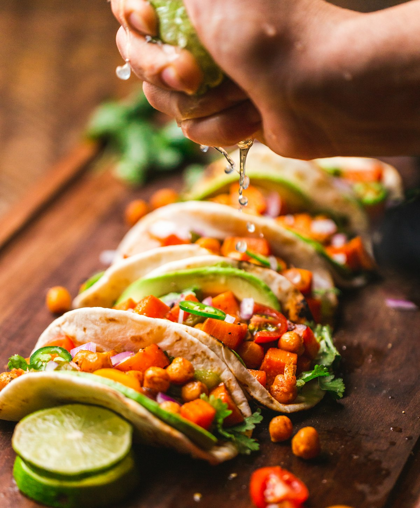
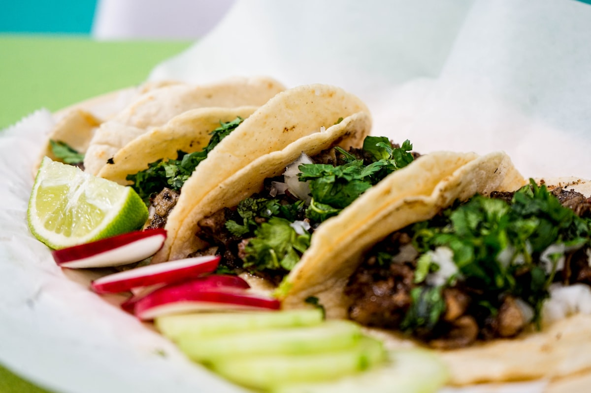
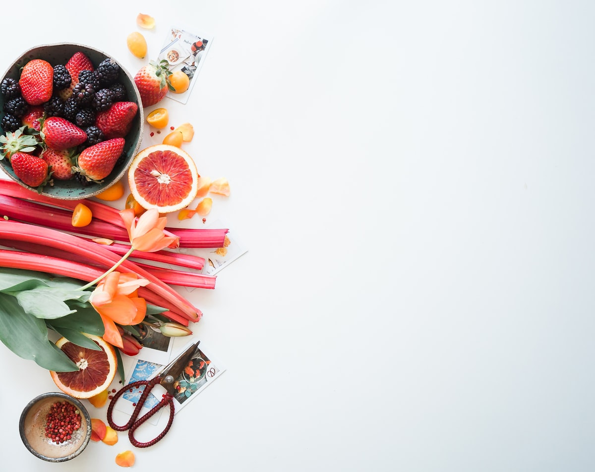

Enchiladas potosinas con más vegetales (y más proteína).
Una receta clásica potosina con pequeños ajustes que suman saciedad sin robarle su sabor característico.
Leer más →Notas quincenales sobre nutrición potosina, recetas de temporada, mitos desmentidos y pequeños cambios que transforman tu relación con la comida.

Una defensa tranquila contra el perfeccionismo dietético: por qué satanizar alimentos es la forma más rápida de romper tu relación con la comida, y qué hacer en su lugar.
Leer el artículo →
Una receta clásica potosina con pequeños ajustes que suman saciedad sin robarle su sabor característico.
Leer más →
El pan y la tortilla siguen cargando con una mala fama inmerecida. Hablemos de carbohidratos con calma y sin demonizar nada.
Leer más →Guía práctica para runners potosinos: qué comer, cuándo y cómo hidratar bajo el sol de SLP.
Leer más →
Una pequeña guía para los días en que el estrés tapa las señales de hambre: sin reglas, solo anclas que suelen ayudar.
Leer más →
Cómo adaptar la alimentación tradicional potosina a un diagnóstico de diabetes sin renunciar al gusto ni a la cultura.
Leer más →Doce ingredientes económicos y fáciles de conseguir en el Mercado República para construir comidas sencillas y balanceadas.
Leer más →